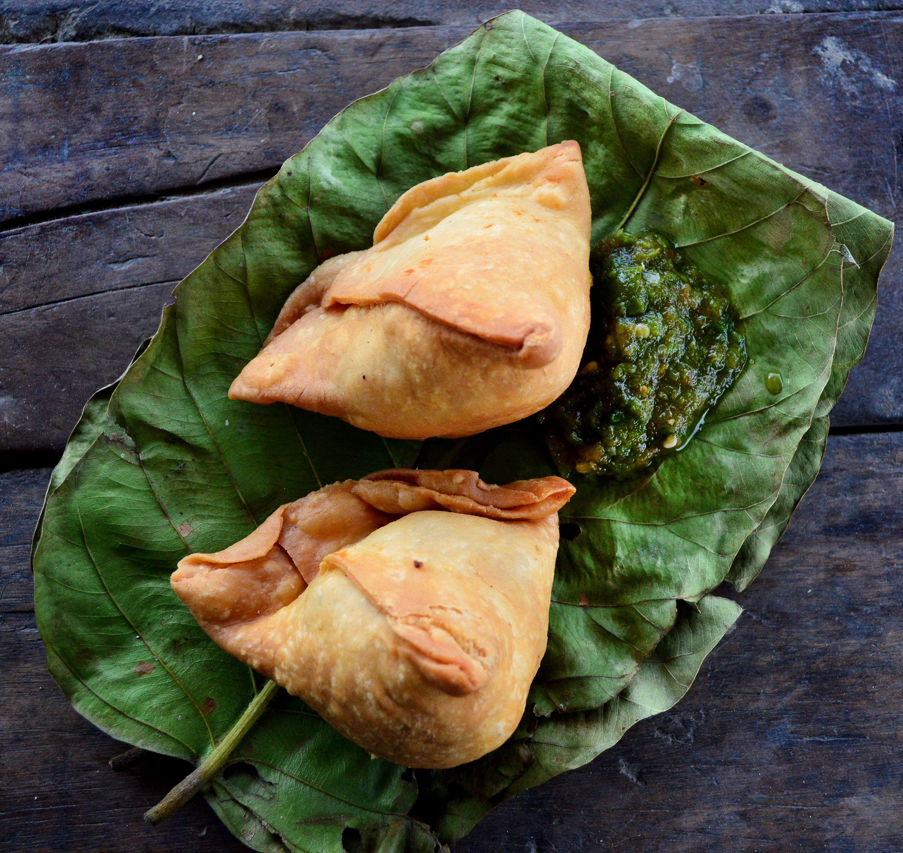

Samosa
Home

Description
It is a pastry with a savory filling that mostly consists of vegetables
like spiced potatoes, onions, and peas.
Ingredients
- Spices(Ajwain seeds, Amchur, Asafoetida, Black mustard seeds, Garam Masala,
Cumin seeds and powder, coriander seeds and turmeric)
- Flour
- Green chilli
- Ghee or oil
- Potatoes
- Ginger
- Peas
- Coriander
Steps
- Boil potatoes until tender, then use a fork to roughly mash.A
healthy dose of spices are fried up with fresh ginger and chilli
which is then tossed through along the peas. Add the mashed potato
and gently but thoroughly mix. Lastly, mix through fresh coriander,
then let the filling cool completely before using.
- Mix the flour, Ajwain seeds and salt, then pour the ghee or oil in.
Use your fingers to rub the ghee in until it resembles coarse breadcrumbs.
We then add water until it is wet enough to form a dough.
- Use a small knife to cut a circle in half. Work with one disc of dough
at a time. Brush disc with water along half the straight edge you just cut
fold one side in. Then fold the other side in, overlapping by about 1cm /
2/5″, to form a cone shape. Fill with the spiced potato filling.
- Heat the oil to 160°C/320°F, then fry 3 or 4 samosas for 3 minutes, turning
occasionally. The pastry should be cooked but pale. Once you’ve done the first
fry with all the Samosas, increase the oil heat to 190°C/375°F. Then fry the
Samosas in batches of 3 or 4 for around 1 1/2 to 2 minutes until golden